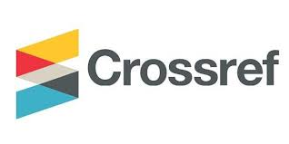

Identifying the best place to publish research involves consideration of many factors which are often ignored by most of the researchers.
ResearcHook compiles all of these factors providing you the best links of journals to submit your papers!
We provide you the best links where you can submit your reserach papers with proper guidance and many more tips and tricks to become a pro in writing research papers!

A guide to help researchers and feel confident identifying suitable journals and preparing their paper for submission. We have mentioned some of the reputed sites where you can submit your papers.

You can submit to most Elsevier journals using our online systems. The system you use will depend on the journal to which you submit. Once submitted, your paper will be considered by the editor and if it passes initial screening, it will be sent for peer review by experts in your field.
SpringerOpen articles and books are subject to high-level peer review, editorial, author and production services, ensuring the quality and reliability of the work. For journals, editorial and peer review policies are available in the “Submission Guidelines” on each journal’s website.
Once you have written your article and prepared your graphics, you can submit your article for review. After checking that your article complies with the target journal’s submission guidelines, you are ready to submit. Click the Submit Your Manuscript button on the journal’s home page on IEEE Xplore.
Web of Science is one of the highly reputed journal indexing databases in the entire globe. The most important suggestions for research authors to have their articles successfully published in Web of Science indexed journals are summarized by the framework entitled ‘The Four Cs of scientific writing and publication’ mentioned in our website.
To submit your manuscript, register and log in to the submission website. Once you have registered, click here to go to the submission form for Sci. All co-authors can see the manuscript details in the submission system, if they register and log in using the e-mail address provided during manuscript submission.
IJSRED is one of the leading and growing, scholarly open access, peer-reviewed, bimonthly, and fully refereed scientific research journal.It provides a platform for publishing results and research with a strong empirical component. It aims to bridge the significant gap between research and practice by promoting the publication of original, novel, industry-relevant research.
EDAS manages the paper submission, review and registration process for conferences, workshops and journals. It is a hosted and supported service, i.e., there is no software to install and support staff can help authors, reviewers and chairs with any problems. Users interact with EDAS using standard web browsers.

What's a good Impact Factor?(Ranking In 27 Categories)

What's a good Impact Factor?(Ranking In 27 Categories)
Copyright © 2022- . All rights reserved.